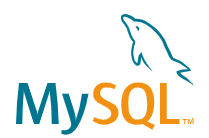
第一步：打开MySQL官网https://www.mysql.com/
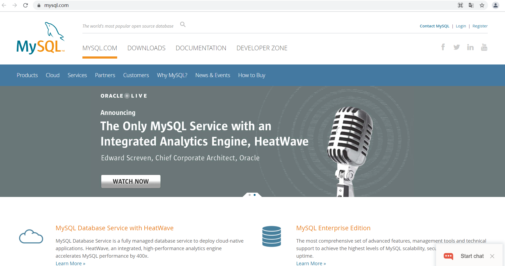
第二步：点击"DOWNLOADS"
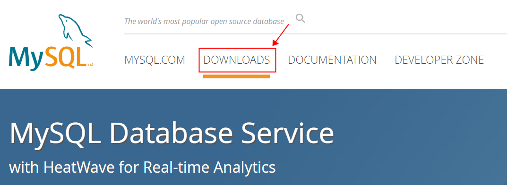
第三步：当前页继续下拉，直到找到下图链接
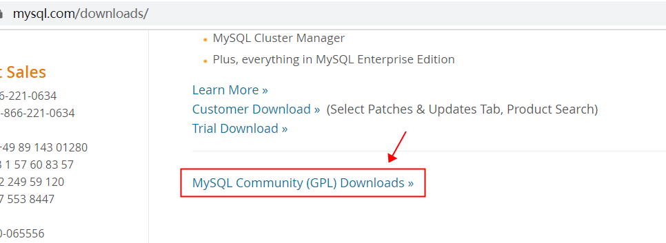
第四步：点击上图链接，进入下面页面，其中“MySQL Community Server”是解压版mysql，“MySQL Installer for Windows”是安装版，这里我们选择解压版
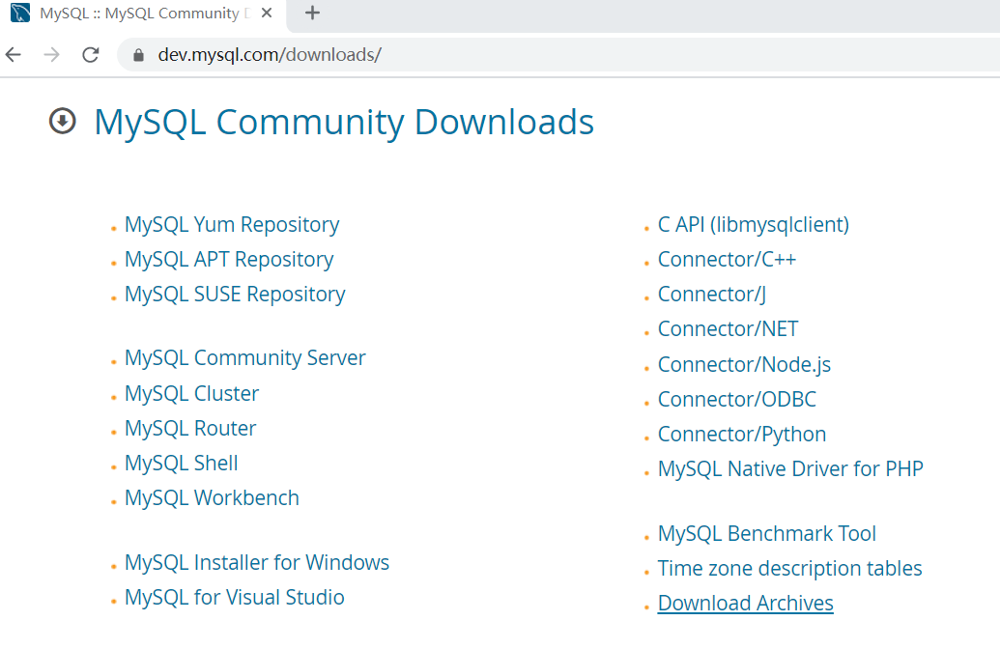
第五步：点击上图“MySQL Community Server”
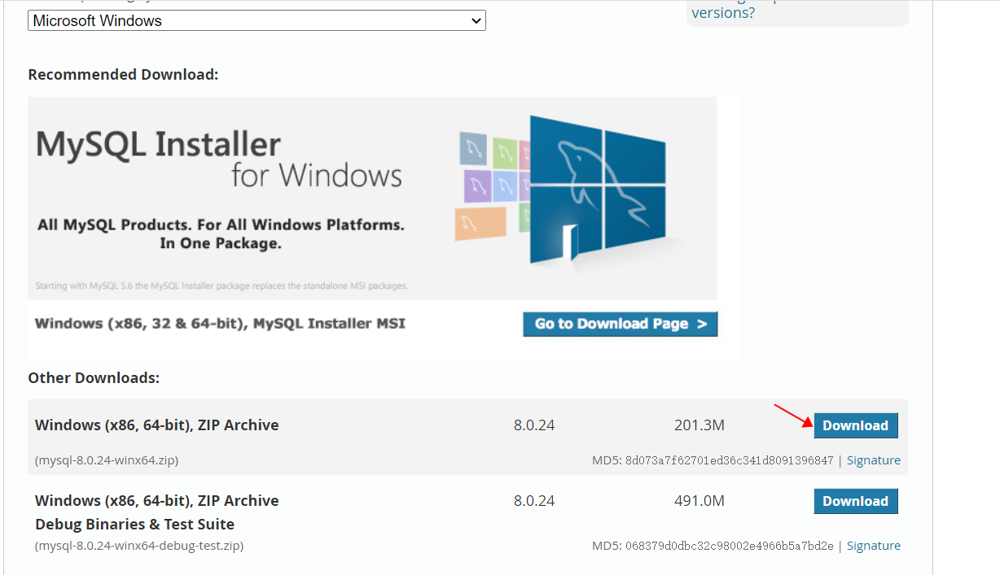
第六步：点击上图第1个“Download”
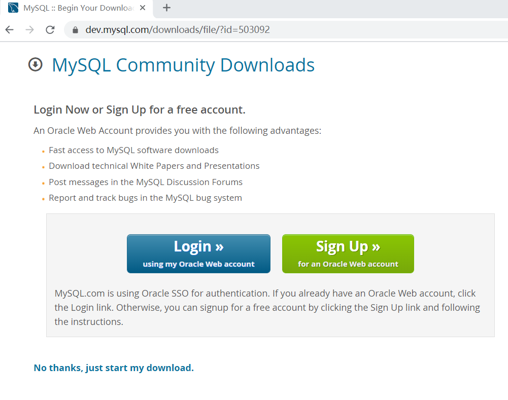
第七步：点击上图“No thanks, just start my download.”开始下载，直到下载完毕。
链接：https://pan.baidu.com/s/1lRWC069K8GE-8rxr259ArQ?pwd=2009 提取码：2009
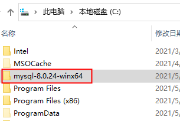
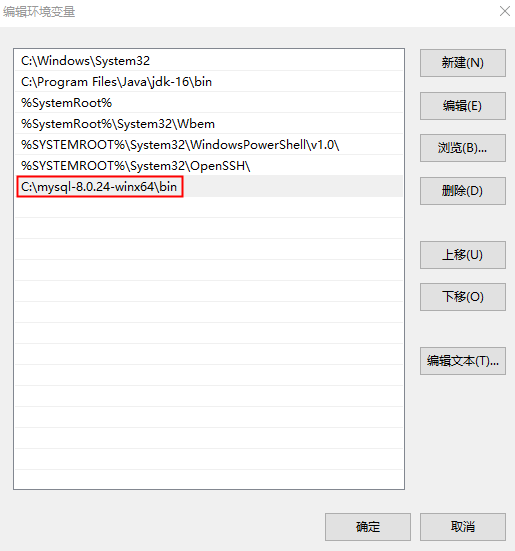
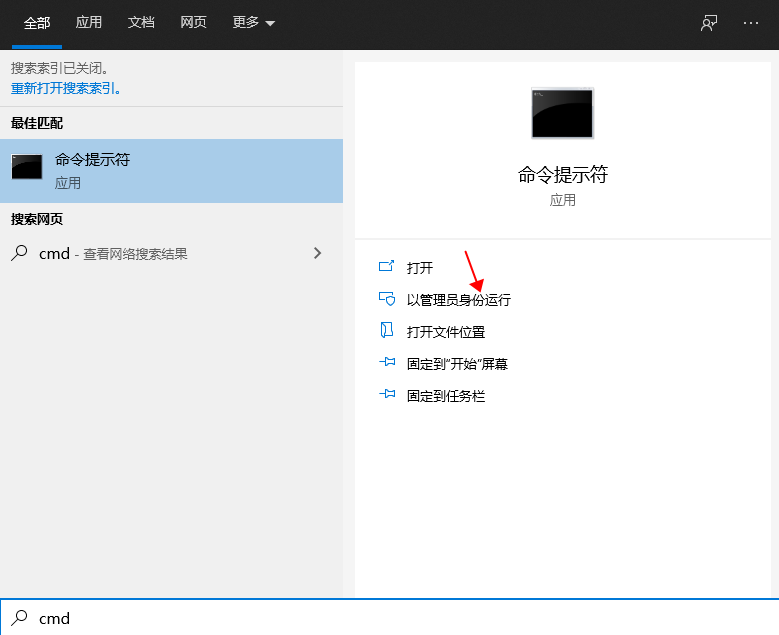
mysqld --initialize --console进行data目录初始化，此时会在控制台生成一个随机密码，下图红框中就是随机密码
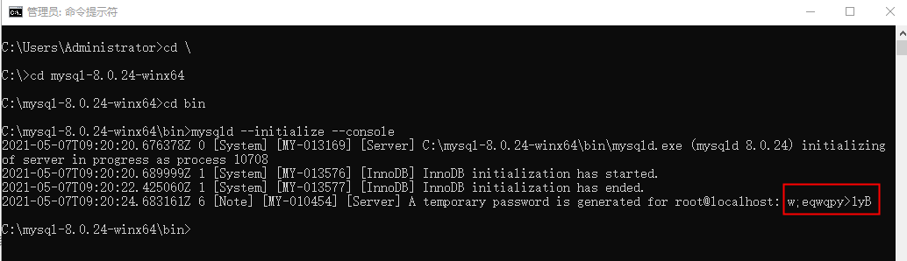
技巧：左键选中密码，直接点击右键，此时密码已经复制到剪贴板中了，然后随便找一个文件，将密码粘贴到文件中保存起来。mysqld -install
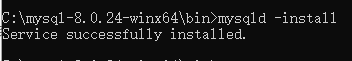
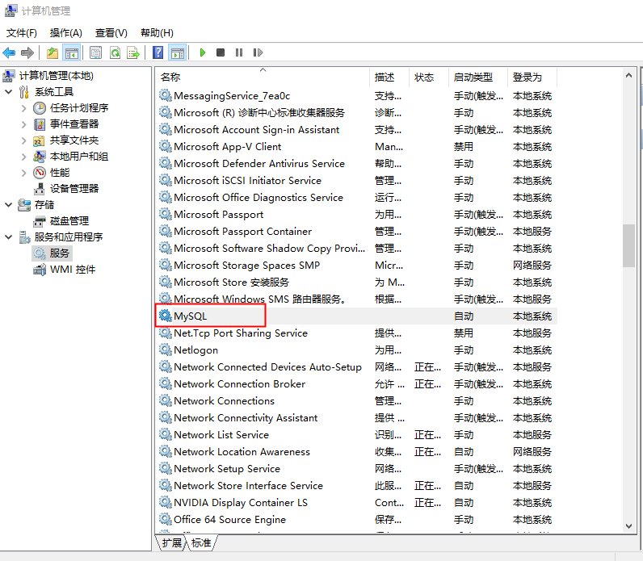
net start mysql，注意start后面是mysql服务的名称
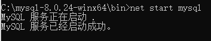
停止mysql服务的命令：net stop mysql
注意：启停mysql服务也可以在上一步的图中点击右键进行启停服务。mysql -uroot -p，然后回车，输入刚才的随机密码，然后回车，看到下图表示成功登录mysql
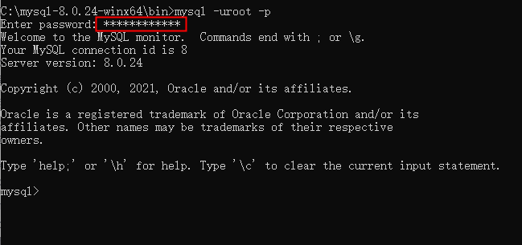
ALTER USER 'root'@'localhost' IDENTIFIED WITH mysql_native_password BY '新密码';
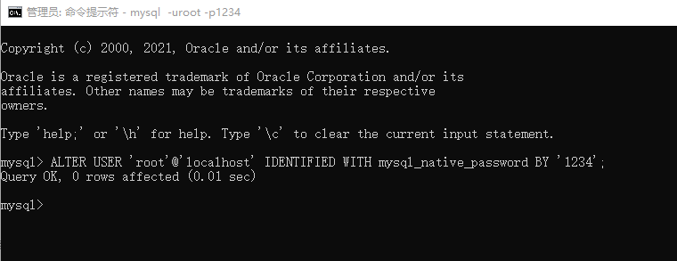
exitquitctrl + cselect version();（sql）mysql --version（bash）control + csource /path/to/your/file.sql;
* 或者使用简写：`\. /path/to/your/file.sql`
* **方法二：在系统命令行中执行**
mysql -u username -p database_name < /path/to/your/file.sql
* 示例：`mysql -uroot -p mydb < /Users/charles/data.sql`
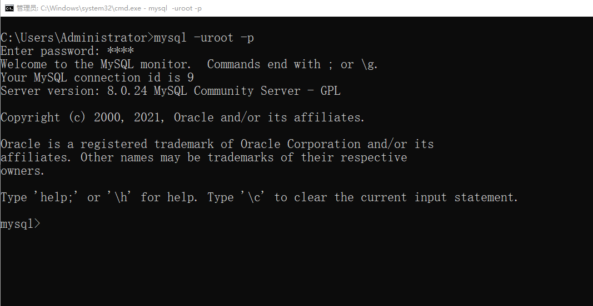
解释mysql -uroot -p：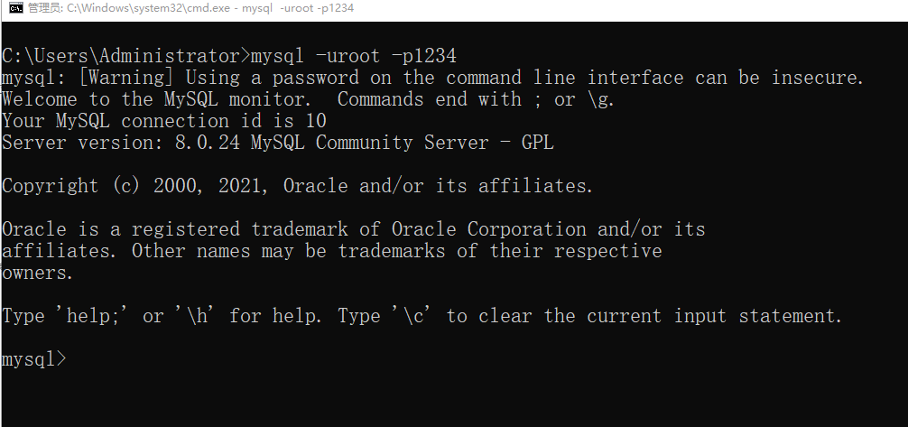
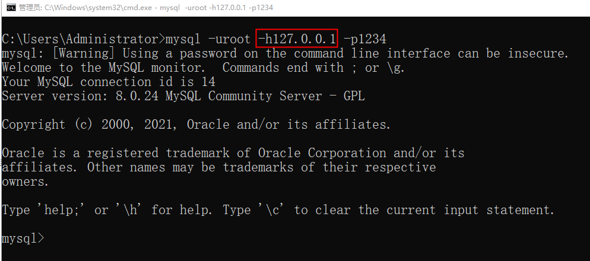
use mysql;update user set host = '%' where user = 'root';flush privileges;